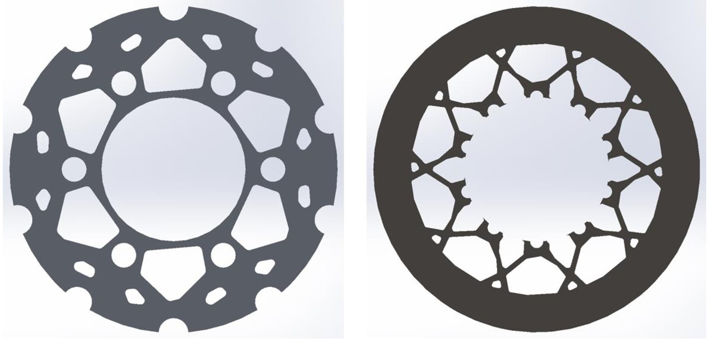
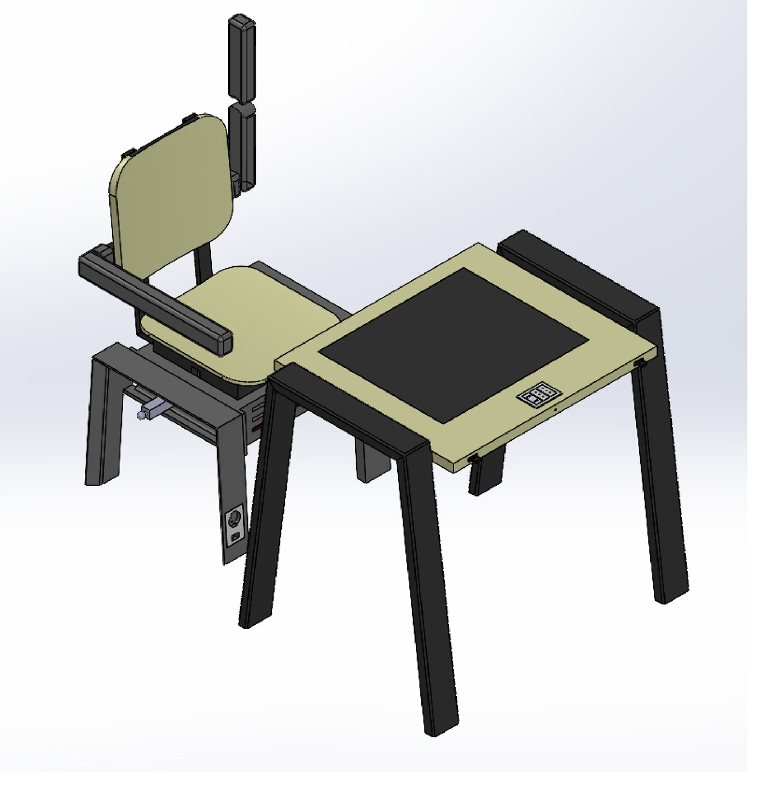
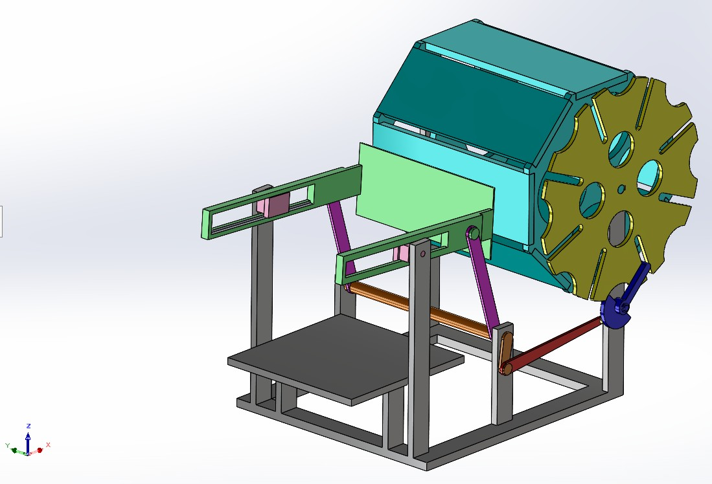
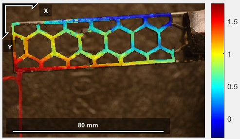
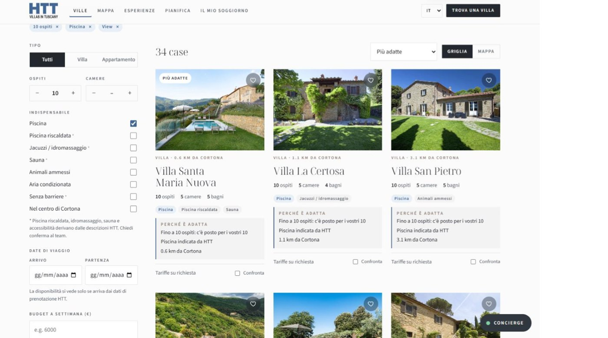

01
Disco freno flottante
Modellazione e analisi strutturale di un disco freno flottante, con ottimizzazione della massa e preparazione virtuale del prototipo.
Portfolio di ingegneria meccanica
Laureato in Ingegneria meccanica e studente magistrale all’Università degli Studi di Perugia.
Disponibilità per tirocinio o primo impiego
Consulta i progetti
Esperienze progettuali in modellazione CAD, analisi strutturale, sviluppo prodotto e misure sperimentali. Interesse professionale per produzione, progettazione meccanica e simulazione.
5 progetti visualizzati.
Modellazione e analisi strutturale di un disco freno flottante, con ottimizzazione della massa e preparazione virtuale del prototipo.

Definizione delle specifiche, selezione del concept, modellazione dell’assieme e valutazione preliminare dei costi di produzione.

Dimensionamento e modellazione di un sistema a un grado di libertà; studio di traiettorie, velocità e accelerazioni dei componenti.

Misura ottica dei campi di spostamento e deformazione mediante MATLAB/Ncorr, con confronto tra provino integro e danneggiato.

Sviluppo completo dello script per gli adempimenti ospiti e contributo al gestionale collegato all'interfaccia del soggiorno.
Documentazione tecnica
Ogni scheda riporta obiettivi, metodi, strumenti e autori del progetto. I lavori universitari sono presentati come attività di gruppo; per HackCortona è specificato il contributo individuale.
La documentazione distingue risultati numerici, evidenze sperimentali e stime economiche, riportando ipotesi di analisi e verifiche ancora necessarie.
Formazione e riconoscimenti
Informazioni professionali
Per opportunità di tirocinio, primo impiego o richieste di approfondimento sui progetti.